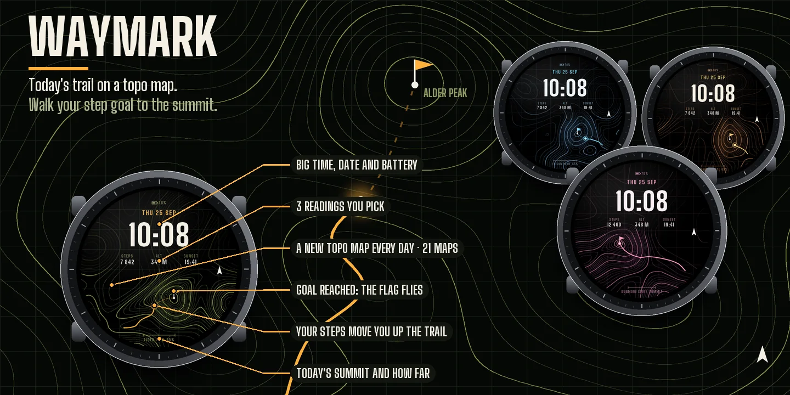
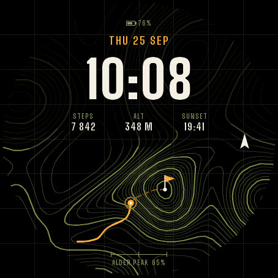
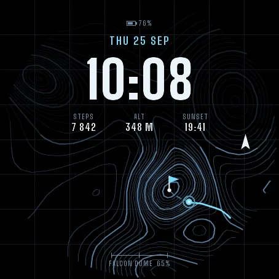
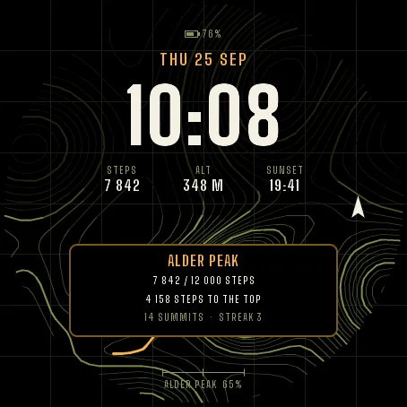
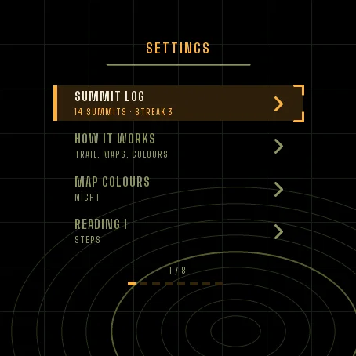
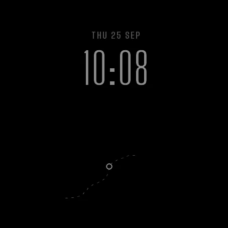

Settings on the watch
Hold UP, pick Watch Face, select Waymark, press START, then Customize. The menu is drawn in the style of the face: your Summit log, a short How it works guide, map colours with a live preview, the three readings under the time, the moving trail and the always-on brightness. The same settings are in Garmin Connect if you prefer the phone.
Today's trail
Every day the face shows a new topographic map: contour lines, a heavier line every fifth contour, a grid, a north arrow. A trail climbs from the edge of the screen to the summit. Your position on it is your step count against the step goal set on your watch: halfway to your goal, halfway up the trail. Reach your goal and the flag flies on the summit. There are 21 maps, each with its own peak and name. A new one appears at midnight.
On the face
- Big time, date and battery at the top.
- Three readings under the time. Pick each one: steps, altitude, next sunrise or sunset, heart rate, Body Battery, floors, distance, calories, intensity minutes, notifications or temperature.
- The name of today's summit and how far you are, at the bottom.
If your watch has no value for a reading, the face shows -- rather than a made-up number.
Moving trail
When you raise your wrist, the dashes of the trail march towards the summit and your position pulses. You can switch this off in the menu.
Summit log
Each day you reach your step goal counts as one summit. The Summit log in the menu shows your total, your current streak, your best streak and the last seven days. On watches with a touchscreen, press and hold the face to see today's summit card: steps, steps left to the top, summits and streak. Hold again to hide it. Nothing leaves the watch.
Five map colours
Night, Glacier, Desert, Forest and Alpenglow. All of them are yours from the start.
Always-on
A separate always-on design on a black screen: thin time, date, the trail as sparse dots and your position. It shifts slightly every minute to protect the screen. A brighter option is in the menu.
Units
Altitude and distance follow the units set on your watch.
Compatible with Garmin AMOLED watches listed below. English only. Questions or a watch you would like to see supported: use the support e-mail on this page.